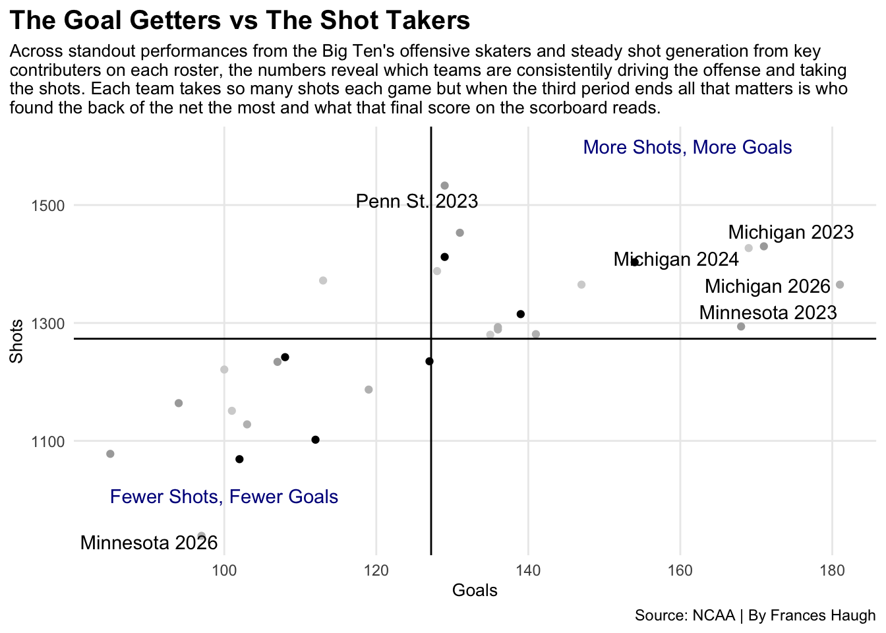
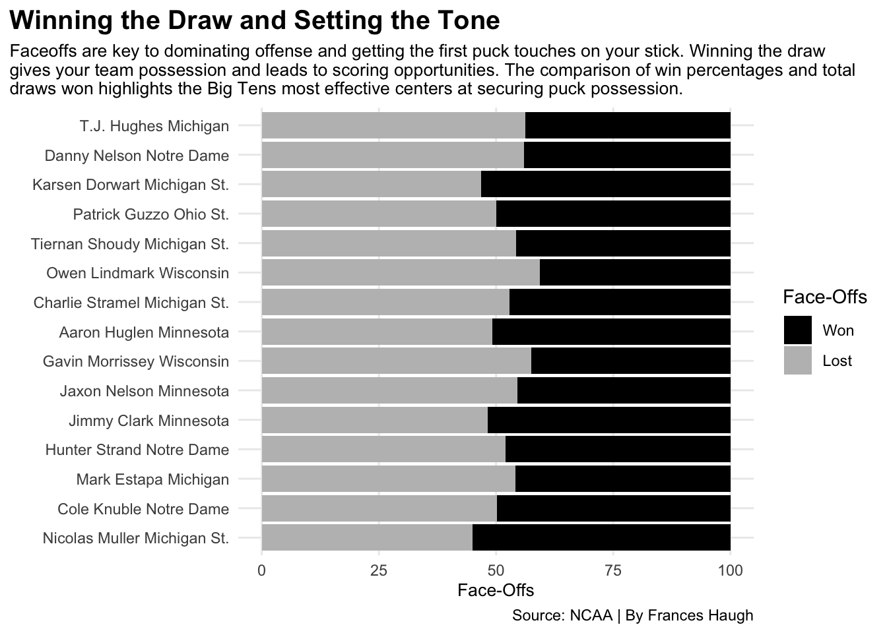
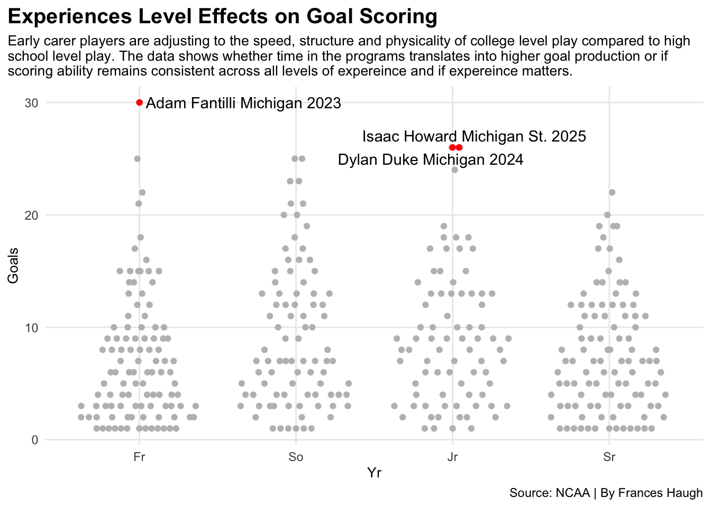

Who is Dominating the Ice in the Big Ten Conference in the Past Four Years?
hockey
college
big10
Author
Frances Haugh
Published
April 23, 2026
Hockey in the Big Ten Conference is a conference you typically see dominating in college hockey. With strong programs and strong traditions, the Big Ten produces some top teams in the nation. Schools like the Minnesota Gophers representing the “State of Hockey” is a program often expected to dominate.
The Big Ten Conference has a total of 23 Frozen Four championships which shows how successful they are. Michigan Wolverines stands out the most with nine national championships and multiple tournament appearances. Michigan has proven to be one of the most successful hockey teams in the Big Ten.
Success in the past doesn’t always determine who the best team is today. Each team is so overly competitive and the programs continue to grow each year. With each program consistently performing and growing stronger helps prove that a new team could dominate every year. But is that actually the case?
Lets see who has dominated in the past four years.
Using NCAA stats we can analyze who can find the back of the net the most and who you want on faceoffs while comparing who is dominating in faceoffs. This also allows us to see if grade matters and how the experience levels differ.
Ultimately the question to answer: which team dominates the Big Ten Conference?
Code
library(tidyverse)library(ggrepel)library(ggbeeswarm)team23 <-read_csv("ncaa_mih_team_stats_2023.csv")team24 <-read_csv("ncaa_mih_team_stats_2024.csv")team25 <-read_csv("ncaa_mih_team_stats_2025.csv")team26 <-read_csv("ncaa_mih_team_stats_2026.csv")b1023 <- team23 |>filter(Conference =="Big Ten") |>mutate(TeamSeason =paste(Institution, Season))b1024 <- team24 |>filter(Conference =="Big Ten") |>mutate(TeamSeason =paste(Institution, Season))b1025 <- team25 |>filter(Conference =="Big Ten") |>mutate(TeamSeason =paste(Institution, Season))b1026 <- team26 |>filter(Conference =="Big Ten") |>mutate(TeamSeason =paste(Institution, Season))bigten <-bind_rows(b1023, b1024, b1025, b1026)biglabels <- bigten |>filter(TeamSeason %in%c("Michigan 2023", "Michigan 2024", "Michigan 2026", "Minnesota 2023", "Penn St. 2023", "Minnesota 2026"))ggplot() +geom_point(data=b1023, aes(x=Goals, y=Shots), color="darkgrey") +geom_point(data=b1024, aes(x=Goals, y=Shots), color="lightgray") +geom_point(data=b1025, aes(x=Goals, y=Shots), color="black") +geom_point(data=b1026, aes(x=Goals, y=Shots), color="gray") +geom_text_repel(data=biglabels, aes(x=Goals, y=Shots, label=TeamSeason)) +geom_vline(xintercept =127.2143 ) +geom_hline(yintercept =1273.214) +geom_text(aes(x=161, y=1600, label="More Shots, More Goals"), color="darkblue") +geom_text(aes(x=100, y=1007, label="Fewer Shots, Fewer Goals"), color="darkblue") +labs(title="The Goal Getters vs The Shot Takers", subtitle ="Across standout performances from the Big Ten's offensive skaters and steady shot generation from key\ncontributers on each roster, the numbers reveal which teams are consistentily driving the offense and taking\nthe shots. Each team takes so many shots each game but when the third period ends all that matters is who\nfound the back of the net the most and what that final score on the scorboard reads.", caption="Source: NCAA | By Frances Haugh",y ="Shots", x ="Goals") +theme_minimal() +theme(plot.title =element_text(size =15, face ="bold"), axis.title =element_text(size =10),plot.subtitle =element_text(size=10),panel.grid.minor =element_blank(),plot.title.position ="plot" )

Michigan stands out the most. Three of four of the last four years have Michigan with the most goals and the second highest amount of shots typically. Michigan is able to take shots at a risk and they are a team who gets rewarded. In the past four years Michigan has taken 5,324 shots with 633 finding the back of the net.
In their 2026 season they had the highest number of goals scored with 181 while the lowest was Minnesota.
Minnesota the “State of Hockey” struggles to score goals in their 2026 season with only scoring 97 and having a total of 939 shots. However in their 2023 season they had a total of 168 goals scored which is the second highest behind Michigan’s 171 goals.
Penn State only has one stand out year in 2023 but only with having the most number of shots in a season tallying up to 1,533.
Goals come from having possession of the puck, but when it comes down to possession it starts with who has the puck on the stick after the face-off.
Code
players23 <-read_csv("ncaa_mih_player_stats_2023.csv")players24 <-read_csv("ncaa_mih_player_stats_2024.csv")players25 <-read_csv("ncaa_mih_player_stats_2025.csv")players26 <-read_csv("ncaa_mih_player_stats_2026.csv")players <-bind_rows(players23, players24, players25, players26)bigplayers <- players |>filter(Team %in%c("Wisconsin", "Michigan", "Michigan St.","Minnesota", "Penn St.", "Notre Dame", "Ohio St."))fo <- bigplayers |>mutate(PlayerTeam =paste(Player, Team)) |>group_by(PlayerTeam) |>summarise(Wontotal =sum(`FO won`),Losttotal =sum(`FO lost`) ) |>mutate(Total = Wontotal + Losttotal, Won = (Wontotal/Total)*100,Lost = (Losttotal/Total)*100, ) |>ungroup() |>top_n(15, wt=Total) |>select(PlayerTeam, Won, Lost, Total)folong <- fo |>pivot_longer(cols=c(-PlayerTeam, -Total), names_to="Outcome", values_to="Count")ggplot() +geom_bar(data=folong, aes(x=reorder(PlayerTeam, Total), weight=Count, fill=Outcome)) +coord_flip() +scale_fill_manual(name ="Face-Offs",values =c("black", "grey"),labels =c("Won", "Lost") ) +labs(title="Winning the Draw and Setting the Tone", subtitle ="Faceoffs are key to dominating offense and getting the first puck touches on your stick. Winning the draw\ngives your team possession and leads to scoring opportunities. The comparison of win percentages and total\ndraws won highlights the Big Tens most effective centers at securing puck possession.", caption="Source: NCAA | By Frances Haugh",y ="Face-Offs", x ="") +theme_minimal() +theme(plot.title =element_text(size =15, face ="bold"), axis.title =element_text(size =10),plot.subtitle =element_text(size=10),panel.grid.minor =element_blank(),plot.title.position ="plot" )

T.J Hughes of Michigan is given opportunities in the circle the most, however he might not be who you want in the circle. He has the most faceoffs taken in the Big Ten but he is losing around 65% of them. Danny Nelson of Notre Dame is in the same boat. Both players receive the opportunities but they are not capitalizing enough with gaining possession.
Karsen Dorwart of Michigan State is who they want in the dot. He is one of a few players who is winning over 50% of his faceoffs. He is the third highest in the Big Ten for faceoffs taken.
Nicolas Muller of Michigan State has the highest percentage of faceoffs won however he has taken the least amount of faceoffs.
Faceoff gains possession which leads to goals, which ultimately leads to the talent on your roster. How old is your roster? Do coaches look at the freshmen class for goals or do they rely on the upperclassmen to find the back of the net?
Code
position <- bigplayers |>filter(Pos =="F") position$Yr <-factor(position$Yr, levels =c("Fr", "So", "Jr", "Sr"))topscorers <- position |>filter(Goals >25) |>mutate(PlayerTeamSeason =paste(Player, Team, Season))ggplot() +geom_quasirandom(data=position, aes(x=Yr, y=Goals), color="gray") +geom_beeswarm(data=topscorers, aes(x=Yr, y=Goals), color="red") +geom_text_repel(data=topscorers, aes(x=Yr, y=Goals, label=PlayerTeamSeason)) +labs(title="Experiences Level Effects on Goal Scoring", subtitle ="Early carer players are adjusting to the speed, structure and physicality of college level play compared to high\nschool level play. The data shows whether time in the programs translates into higher goal production or if\nscoring ability remains consistent across all levels of expereince and if expereince matters.", caption="Source: NCAA | By Frances Haugh",y ="Goals", x ="Yr") +theme_minimal() +theme(plot.title =element_text(size =15, face ="bold"), axis.title =element_text(size =10),plot.subtitle =element_text(size=10),panel.grid.minor =element_blank(),plot.title.position ="plot" )

College hockey ranges from 18-22 year olds but does the experience level matter? You have new freshmen who play a lot and some play none.
Adam Fantilli had the most goals scored in his freshmen year of college. After his freshman year at Michigan in 2023 he went on to be the number 3rd overall pick in the 2023 NHL draft to the Columbus Blue Jackets. He had so much success before his time at Michigan. He has won a gold and silver medal in the World Juniors. He made his NHL debut on October 12th, 2023.
But it goes back to does experience matter?
Isaac Howard of Michigan State had the most goals in his 2025 junior season with a total of 26. However in his sophomore year at Michigan State he only had 8.
Experience is beneficial in college hockey especially when you have seniors vs freshmen. But is it weird that no seniors have over 25 goals in their season? The highest number of goals scored by a senior is 22 with it being T.J Hughes in his 2026 season with Michigan.
The question to answer: which team dominates the Big Ten Conference? The answer is plain and simple: it’s the Michigan Wolverines who dominate the ice.